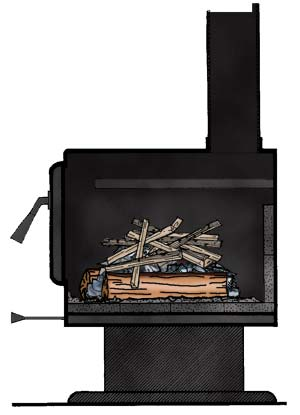

NATE SKOW
Another reliable method for starting fires is to begin with two parallel logs. To build a fire this way, just place two split logs in the firebox and put some twisted newspaper between them. Add some fine kindling — 1 inch square or less — on the newspaper and more kindling of various sizes across the two logs.